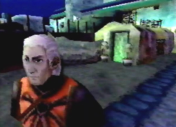

|  |
| Radgam: the Hunter like Aldo, Radgam was also one of the only survivors to come away from a horrible hunting ambush. He and Aldo were on the same hunting team. After the ambush, Radgam settled down in the liberal District. He never forgot his friends unfortunate deaths, and still thinks very highly of himself as a skilled hunter. He frequently yells at Aldo for giving up his hunting way of life. He lives as a hunter and will die as a hunter. |